Actually, Othello-GPT Has A Linear Emergent World Representation
by Neel Nanda 29th Mar 2023 AI Alignment Forum Linkpost for neelnanda.io
Note that this work has since been turned into a paper and published at BlackboxNLP. I think the paper version is more rigorous but much terser and less fun, and both it and this sequence of blog posts are worth reading in different ways
Epistemic Status : This is a write-up of an experiment in speedrunning research, and the core results represent ~20 hours/2.5 days of work (though the write-up took way longer). I'm confident in the main results to the level of "hot damn, check out this graph", but likely have errors in some of the finer details.
Disclaimer : This is a write-up of a personal project, and does not represent the opinions or work of my employer
This post may get heavy on jargon. I recommend looking up unfamiliar terms in my mechanistic interpretability explainer
Thanks to Chris Olah, Martin Wattenberg, David Bau and Kenneth Li for valuable comments and advice on this work, and especially to Kenneth for open sourcing the model weights, dataset and codebase, without which this project wouldn't have been possible! Thanks to ChatGPT for formatting help.
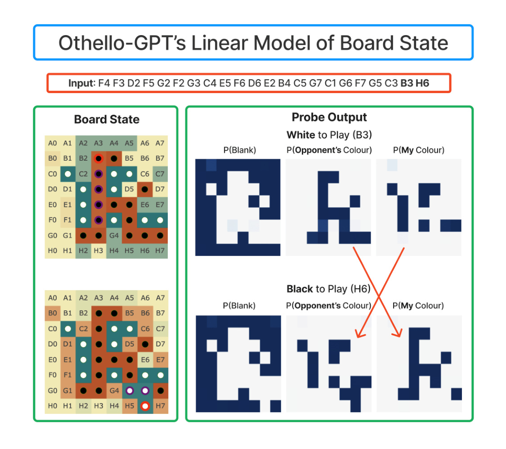
Overview
-
Context: A recent paper trained a model to play legal moves in Othello by predicting the next move, and found that it had spontaneously learned to compute the full board state - an emergent world representation .
-
This could be recovered by non-linear probes but not linear probes.
-
We can causally intervene on this representation to predictably change model outputs, so it's telling us something real
-
-
I find that actually, there's a linear representation of the board state ! But that rather than "this cell is black", it represents "this cell has my colour" , since the model plays both black and white moves.
- We can causally intervene with the linear probe , and the model makes legal moves in the new board!
-
This is evidence for the linear representation hypothesis : that models, in general, compute features and represent them linearly, as directions in space ! (If they don't, mechanistic interpretability would be way harder) The original paper seemed at first like significant evidence for a non-linear representation - the finding of a linear representation hiding underneath shows the real predictive power of this hypothesis!
-
This (slightly) strengthens the paper's evidence that "predict the next token" transformer models are capable of learning a model of the world.
-
Part 2 : There's a lot of fascinating questions left to answer about Othello-GPT - I outline some key directions, and how they fit into my bigger picture of mech interp progress
-
Studying modular circuits : A world model implies emergent modularity - many early circuits together compute a single world model, many late circuits each use it. What can we learn about what transformer modularity looks like, and how to reverse-engineer it?
- Prior transformer circuits work focuses on end-to-end circuits, from the input tokens to output logits. But this seems unlikely to scale! I present some preliminary evidence reading off a neuron's function from its input weights via the probe
-
Neuron interpretability and Studying Superposition : Prior work has made little progress on understanding MLP neurons. I think Othello GPT's neurons are tractable to understand, yet complex enough to teach us a lot!
-
I further think this can help us get some empirical data about the Toy Models of Superposition paper's predictions
-
I investigate max activating dataset examples and find seeming monosemanticity, yet deeper investigation show it seems more complex.
-
-
A transformer circuit laboratory : More broadly, the field has a tension between studying clean, tractable yet over-simplistic toy models and studying the real yet messy problem of interpreting LLMs - Othello-GPT is toy enough to be tractable yet complex enough to be full of mysteries, and I detail many more confusions and conjectures that it could shed light on.
-
-
Part 3: Reflections on the research process I did the bulk of this project in a weekend (~20 hours total), as a (shockingly successful!) experiment in speed-running mech interp research.
-
I give a detailed account of my actual research process : how I got started, what confusing intermediate results look like, and decisions made at each point
-
I give some process-level takeaways on doing research well and fast.
-
-
See the accompanying colab notebook and codebase to build on the many dangling threads!
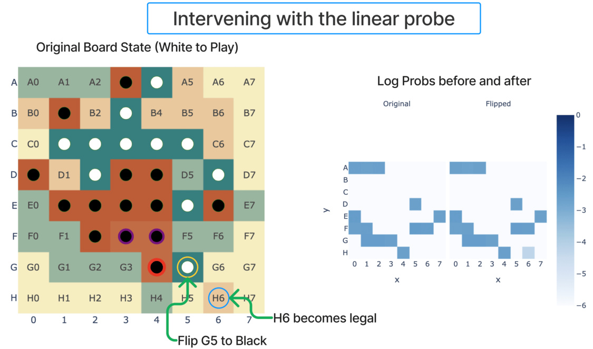
Introduction
This piece spends a while on discussion, context and takeaways. If you're familiar with the paper skip to my findings , skip to takeaways for my updates from this, and if you want technical results skip to probing
Emergent World Representations is a fascinating recent ICLR Oral paper from Kenneth Li et al, summarised in Kenneth's excellent post on the Gradient. They trained a model (Othello-GPT) to play legal moves in the board game Othello, by giving it random games (generated by choosing a legal next move uniformly at random) and training it to predict the next move. The headline result is that OthelloGPT learns an emergent world representation - despite never being explicitly given the state of the board, and just being tasked to predict the next move, it learns to compute the state of the board at each move. (Note that the point of Othello-GPT is to play legal moves, not good moves, though they also study a model trained to play good moves.)
They present two main pieces of evidence. They can extract the board state from the model's residual stream via non-linear probes (a two layer ReLU MLP). And they can use the probes to causally intervene and change the model's representation of the board (by using gradient descent to have the probes output the new board state) - the model now makes legal moves in the new board state even if they are not legal in the old board, and even if that board state is impossible to reach by legal play!
I've strengthened their headline result by finding that much of their more sophisticated (and thus potentially misleading) techniques can be significantly simplified. Not only does the model learn an
emergent world representation, it learns a linear emergent world representation , which can be causally intervened on in a linear way! But rather than representing "this square has a black/white piece", it represents " this square has my/their piece ". The model plays both black and white moves, so this is far more natural from its perspective. With this insight, the whole picture clarifies significantly, and the model becomes far more interpretable!
Background
For those unfamiliar, Othello is a board game analogous to chess or go, with two players, black and white, see the rules outlined in the figure below. I found playing the AI on eOthello helpful for building intuition. A single move can change the colour of pieces far away (so long as there's a continuous vertical, horizontal or diagonal line), which means that calculating board state is actually pretty hard! (to my eyes much harder than in chess)
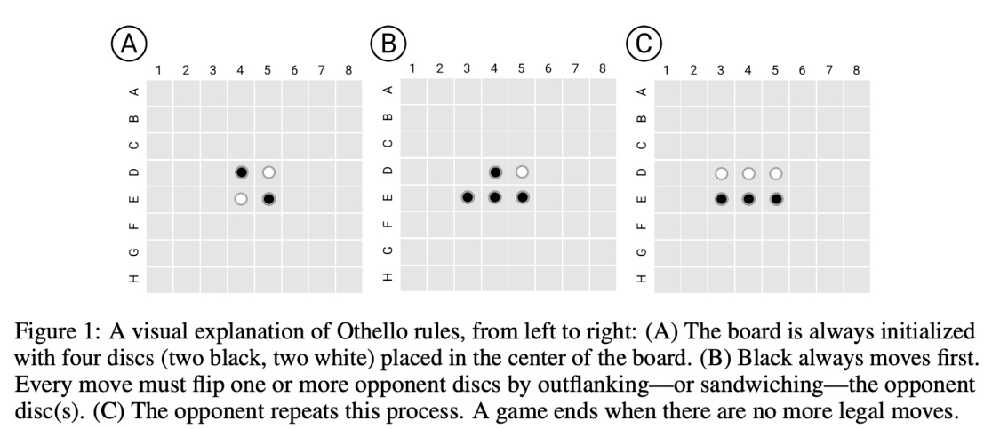
But despite the model just needing to predict the next move, it spontaneously learned to compute the full board state at each move - a fascinating result. A pretty hot question right now is whether LLMs are just bundles of statistical correlations or have some real understanding and computation! This gives suggestive evidence that simple objectives to predict the next token can create rich emergent structure (at least in the toy setting of Othello). Rather than just learning surface level statistics about the distribution of moves, it learned to model the underlying process that generated that data. In my opinion, it's already pretty obvious that transformers can do something more than statistical correlations and pattern matching, see eg induction heads, but it's great to have clearer evidence of fully-fledged world models!
For context on my investigation, it's worth analysing exactly the two pieces of evidence they had for the emergent world representation, the probes and the causal interventions, and their strengths and weaknesses.
The probes give suggestive, but far from conclusive evidence. When training a probe to extract some feature from a model, it's easy to trick yourself. It's crucial to track whether the probe is just reading out the feature, or actually computing the feature itself, and reading out much simpler features from the model. In the extreme case, you could attach a much more powerful model as your "probe", and have it just extract the input moves, and then compute the board state from scratch! They found that linear probes did not work to recover board state (with an error rate of 20.4%): (ie, projecting the residual stream onto some 3 learned directions for each square, corresponding to empty, black and white logits). While the simplest non-linear probes (a two layer MLP with a single hidden ReLU layer) worked extremely well (an error rate of 1.7%). Further (as described in their table 2, screenshot below), these nonlinear probes did not work on a randomly initialised network, and worked better on some layers than others, suggesting they were learning something real from the model.
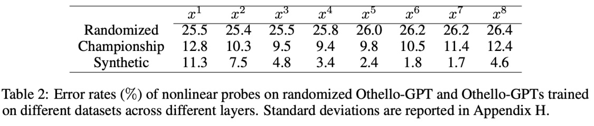
Probes on their own can mislead, and don't necessarily tell us that the model uses this representation - the probe could be extracting some vestigial features or a side effect of some more useful computation, and give a misleading picture of how the model computes the solution. But their causal interventions make this much more compelling evidence. They intervene by a fairly convoluted process (detailed in the figure below, though you don't need to understand the details), which boils down to choosing a new board state, and applying gradient descend to the model's residual stream such that our probe thinks the model's residual stream represents the new board state. I have an immediate skepticism of any complex technique like this: when applying a powerful method like gradient descent it's so easy to wildly diverge from what the models original functioning is like! But the fact that the model could do the non-trivial computation of converting an edited board state into a legal move post-edit is a very impressive result! I consider it very strong evidence both that the probe has discovered something real, and that the representation found by the probe is causally linked to the model's actual computation!
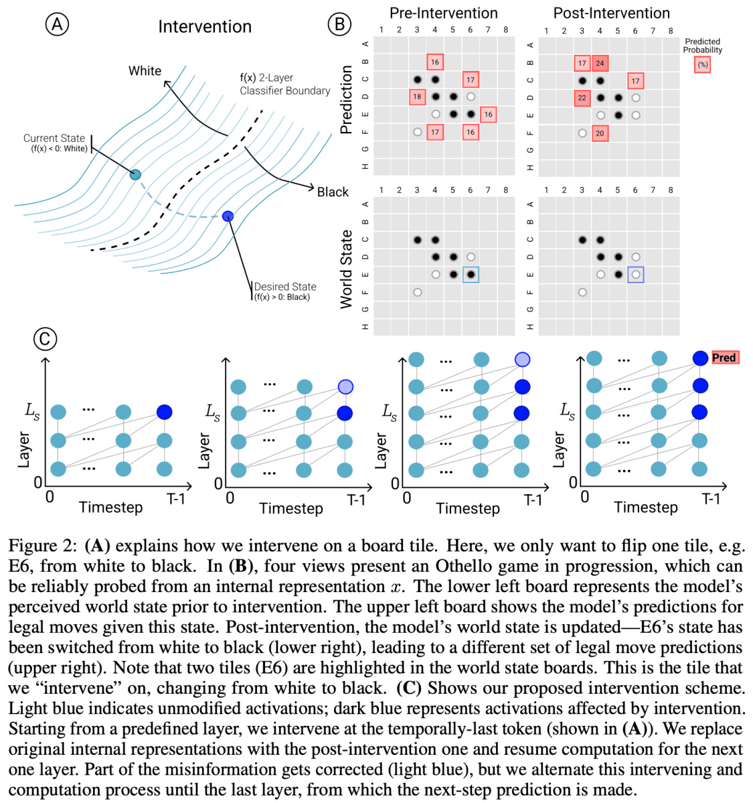
Naive Implications for Mechanistic Interpretability
I was very interested in this paper, because it simultaneously had the fascinating finding of an emergent world model (and I'm also generally into any good interp paper), yet something felt off. The techniques used here seemed "too" powerful. The results were strong enough that something here seemed clearly real, but my intuition is that if you've really understood a model's internals, you should just be able to
understand and manipulate it with far simpler techniques, like linear probes and interventions, and it's easy to be misled by more powerful techniques.
In particular, my best guess about model internals is that the networks form decomposable, linear representations : that the model computes a bunch of useful features, and represents these as directions in activation space. See Toy Models of Superposition for some excellent exposition on this. This is decomposable because each feature can vary independently (from the perspective of the model - on the data distribution they're likely dependent), and linear because we can extract a feature by projecting onto that feature's direction (if the features are orthogonal - if we have something like superposition it's messier). This is a natural way for models to work - they're fundamentally a series of matrix multiplications with some non-linearities stuck in convenient places, and a decomposable, linear representation allows it to extract any combination of features with a linear map!
Under this framework, if a feature can be found by a linear probe then the model has already computed it, and if that feature is used in a circuit downstream, we should be able to causally intervene with a linear intervention, just changing the coordinate along that feature's direction. So the fascinating finding that linear probes do not work, but non-linear probes do, suggests that either the model has a fundamentally non-linear representation of features (which it is capable of using directly for downstream computation!), or there's a linear representation of simpler and more natural features, from which the probe computes board state. My prior was on a linear representation of simpler features, but the causal intervention findings felt like moderate evidence for the non-linear representation. And the non-linear representation hypothesis would be a big deal if true! If you want to reverse-engineer a model, you need to have a crisp picture of how its computation maps onto activations and weights, and this would break a lot of my beliefs about how this correspondance works! Further, linear representations are just really convenient to reverse-engineer, and this would make me notably more pessimistic about mechanistic interpretability working.
My Findings
I'm of the opinion that the best way to become less confused about a mysterious model behaviour is to mechanistically analyse it. To zoom in on whatever features and circuits we can find, build our understanding from the bottom up, and use this to form grounded beliefs about what's actually going on. This was the source of my investigation into grokking, and I wanted to apply it here. I started by trying activation patching and looking for interpretable circuits/neurons, and I noticed a motif whereby some neurons would fire every other move, but with different parity each game. Digging further, I stumbled upon neuron 1393 in layer 5, which seemed to learn (D1==white) AND (E2==black) on odd moves, and (D1==black) AND (E2==white) on even moves.
Generalising from this motif, I found that, in fact, the model does learn a linear representation of board state! But rather than having a direction saying eg "square F5 has a black counter" it says "square F5 has one of my counters" . In hindsight, thinking in terms of my vs their colour makes far more sense from the
model's perspective - it's playing both black and white, and the valid moves for black become valid moves for white if you flip every piece's colour! (I've since this same observation in Haoxing Du's analysis of Go playing models )
If you train a linear probe on just odd/even moves (ie with black/white to play) then it gets near perfect accuracy! And it transfers reasonably well to the other moves, if you flip its output.
I speculate that their non-linear probe just learned to extract the two features of "I am playing white" and "this square has my colour" and to do an XOR of those. Fascinatingly, without the insight to flip every other representation, this is a pathological example for linear probes - the representation flips positive to negative every time, so it's impossible to recover the true linear structure!
And we can use our probe to causally intervene on the model. The first thing I tried was just negating the coordinate in the direction given by the probe for a square (on the residual stream after layer 4, with no further intervention), and it just worked - see the figure below! Note that I consider this the weakest part of my investigation - on further attempts it needs some hyper-parameter fiddling and is imperfect, discussed later , and I've only looked at case studies rather than a systematic benchmark.
This project was an experiment in speed-running mech interp research, and I got all of the main results in this post over a weekend (~2.5 days/20 hours). I am very satisfied with the results of this experiment! I discuss some of my process-level takeaways , and try to outline the underlying research process in a pedagogical way - how I got started, how I got traction on the problem, and what the compelling intermediate results looked like.
I also found a lot of tantalising hints of deeper structure inside the model! For example, we can use this probe to interpret input and output weights of neurons, eg Neuron 1393 in Layer 5 which seems to represent (C0==blank) AND (D1==theirs) AND (E2==mine) (we convert the probe to two directions, blank - 0.5 * my - 0.5 * their , and my - their )
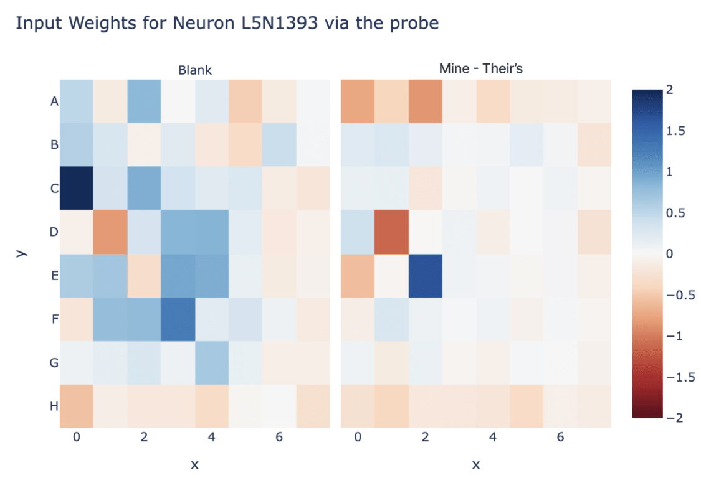
Or, if we look at the top 1% of dataset examples for some layer 4 neurons and look at the frequency by which a square is non-empty, many seem to activate when a specific square is empty! (But some neighbours are present)
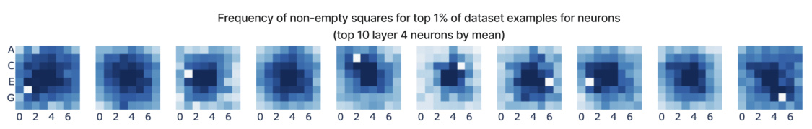
I haven't looked hard into these, but I think there's a lot of exciting directions to better understand this model, that I outline in future work . An angle I'm particularly excited about here is moving beyond just studying "end-to-end" transformer circuits - existing work (eg indirect object identification or induction heads) tends to focus on a circuit that goes from the input tokens to the output logits, because it's much easier to interpret the inputs and outputs than any point in the middle! But our probe can act as a "checkpoint" in the middle - we understand what the probe's directions mean, and we can use this to find early circuits mapping the input moves to compute the world model given by the probe, and late circuits mapping the world model to the output logits!
More generally, the level of traction I've gotten suggests there's a lot of low hanging fruit here! I think this model could serve as an excellent laboratory to test other confusions and claims about models - it's simultaneously clean and algorithmic enough to be tractable, yet large and complex enough to be exciting and less toy. Can we find evidence of superposition? Can we find monosemantic neurons? Are all neurons monosemantic, or can we find and study polysemanticity and superposition in the wild? How do different neuron activations (GELU, SoLU, SwiGLU, etc) affect interpretability? More generally, what kinds of circuits can we find?!
Takeaways
How do models represent features?
My most important takeaway is that this gives moderate evidence for models, in practice, learning decomposable, linear representations! (And I am very glad that I don't need to throw away my frameworks for thinking about models.) Part of the purpose of writing such a long background section is to illustrate that this was genuinely in doubt! The fact that the original paper needed non-linear probes, yet could causally intervene via the probes, seemed to suggest a genuinely non-linear representation, and this could have gone either way. But I now know (and it may feel obvious in hindsight) that it was linear.
As further evidence that this was genuinely in doubt, I've since become aware of an independent discussion between Chris Olah and Martin Wattenberg (an author of the paper), where I gather that Chris pre-registered the prediction that the probe was doing computation on an underlying linear representation, while Martin thought the model learned a genuinely non-linear representation.
Models are complex and we aren't (yet!) very good at reverse-engineering them, which makes evidence for how best to think about them sparse and speculative. One of the best things we have to work with is toy models that are complex enough that we don't know in advance what gradient descent will learn, yet simple enough that we can in practice reverse-engineer them, and Othello-GPT formed an unexpectedly pure natural experiment!
Conceptual Takeaways
A further smattering of conceptual takeaways I have about mech interp from this work - these are fairly speculative, and are mostly just slight updates to beliefs I already held, but hopefully of interest!
An obvious caveat to all of the below is that this is preliminary work on a toy model, and generalising to language models is speculative - Othello is a far simpler environment than language/the real world, a far smaller state space, Othello-GPT is likely over-parametrised for good performance on this task while language models are always under-parametetrised, and there's a ground truth solution to the task. I think extrapolation like this is better than nothing, but there are many disanalogies and it's easy to be overconfident!
-
Mech interp for science of deep learning : A motivating belief for my grokking work is that mechanistic interpretability should be a valuable tool for the science of deep learning. If our claims about truly reverse-engineering models are true, then the mech interp toolkit should give grounded and true beliefs about models. So when we encounter mysterious behaviour in a model, mechanistic analysis should de-mystify it!
- I feel validated in this belief by the traction I got on grokking, and I feel further validated here!
-
Mech interp == alien neuroscience : A pithy way to describe mech interp is as understanding the brain of an alien organism, but this feels surprisingly validated here! The model was alien and unintuitive, in that I needed to think in terms of my colour vs their colour, not black vs white, but once I'd found this new perspective it all became far clearer and more interpretable.
- Similar to how modular addition made way more sense when I started thinking in Fourier Transforms!
-
Models can be deeply understood : More fundamentally, this is further evidence that neural networks are genuinely understandable and interpretable, if we can just learn to speak their language. And it makes me mildly more optimistic that narrow investigations into circuits can uncover the underlying principles that will make model internals make sense
- Further, it's evidence that as you start to really understand a model, mysteries start to dissolve, and it becomes far easier to control and edit - we went from needing to do gradient descent against a non-linear probe to just changing the coordinate along a single direction at a single activation.
-
Probing is surprisingly legit : As noted, I'm skeptical by default about any attempt to understand model internals, especially without evidence from a mechanistically understood case study! Probing, on the face of it, seems like an exciting approach to understand what models really represent, but is rife with conceptual issues:
- Is the probe computing the feature, or is the model? - Is the feature causally used/deliberately computed, or just an accident? - Even if the feature does get deliberately computed and used, have we found where the feature is first computed, or did we find downstream features computed from it (and thus correlated with it)-
I was pleasantly surprised by how well linear probes worked here! I just did naive logistic regression (using AdamW to minimise cross-entropy loss) and none of these issues came up, even though eg some squares had pretty imbalanced class labels.
-
In particular, even though it later turned out that the board state was fully computed by layer 4, and I trained my probe on layer 6, it still picked up on the correct features (allowing intervention at layer 4) - despite the board state being used by layers 5 and 6 to compute downstream features!
-
-
Dropout => redundancy : Othello-GPT was, alas trained with attention and residual dropout (because it was built on the MinGPT codebase, which was inspired by GPT-2, which used them).
Similar to the backup name movers in GPT-2 Small, I found some suggestive evidence of redundancy built into the model - in particular, the final MLP layer seemed to contribute negatively to a particular logit, but would reduce this to compensate when I patched some model internal.
-
Basic techniques just kinda worked? : The main tools I used in this investigation, activation patching, direct logit attribution and max activating dataset examples, basically just worked. I didn't probe hard enough to be confident they didn't mislead me at all, but they all seemed to give me genuinely useful data and hints about model internals.
-
Residual models are ensembles of shallow paths : Further evidence that the residual stream is the central object of a transformer, and the meaningful paths of computation tend not to go through every layer, but heavily use the skip connections. This one is more speculative, but I often noticed that eg layer 3 and layer 4 did similar things, and layer 5 and layer 6 neurons did similar things. (Though I'm not confident there weren't subtle interactions, especially re dropout!)
-
Can LLMs understand things? : A major source of excitement about the original Othello paper was that it showed a predict-the-next-token model spotaneously learning the underlying structure generating its data - the obvious inference is that a large language model, trained to predict the next token in natural language, may spontaneously learn to model the world. To the degree that you took the original paper as evidence for this, I think that my results strengthen the original paper's claims, including as evidence for this!
-
My personal take is that LLMs obviously learn something more than just statistical correlations, and that this should be pretty obvious from interacting with them! (And finding actual inference-time algorithms like induction heads just reinforces this). But I'm not sure how much the paper is a meaningful update for what actually happens in practice.
-
Literally the only thing Othello-GPT cares about is playing legal moves, and having a representation of the board is valuable for that, so it makes sense that it'd get a lot of investment (having 128 probe directions gets you). But likely a bunch of dumb heuristics would be much cheaper and work OK for much worse performance - we see that the model trained to be good at Othello seems to have a much worse world model.
-
Further, computing the board state is way harder than it seems at first glance! If I coded up an Othello bot, I'd have it compute the board state iteratively, updating after each move. But transformers are built to do parallel, not serial processing - they can't recurse! In just 5 blocks, it needs to simultaneously compute the board state at every position (I'm very curious how it does this!)
-
And taking up 2 dimensions per square consumes 128 of the residual stream's 512 dimensions (ignoring any intermediate terms), a major investment!
-
-
For an LLM, it seems clear that it can learn some kind of world model if it really wants to, and this paper demonstrates that principle convincingly. And it's plausible to me that for any task where a world model would help, a sufficiently large LLM will learn the relevant world model, to get that extra shred of recovered loss. But this is a fundamentally empirical question, and I'd love to see data studying real models!
-
-
Note further that if an LLM does learn a world model, it's likely just one circuit among many and thus hard to reliably detect - I'm sure it'll be easy to generate gotchas where the LLM violates what that world model says, if only because the LLM wants to predict the next token, and it's easy to cue it to use another circuit. There's been some recent Twitter buzz about Bing Chat playing legal chess moves, and I'm personally pretty agnostic about whether it has a real model of a chess board - it seems hard to say either way (especially when models are using chain of thought for some basic recursion!).
-
One of my hopes is that once we get good enough at mech interp, we'll be able to make confident statements about what's actually going on in situations like this!
Probing
Technical Setup
I use the synthetic model from their paper, and you can check out that and their codebase for the technical details. In brief, it's an 8 layer GPT-2 model, trained on a synthetic dataset of Othello games to [0:-1] ) and it predict the next move. The games are length 60, it receives the first 59 moves as input (ie predicts the final 59 moves (ie [1:] ). It's trained with attention dropout and residual dropout. The model has vocab size 61 - one for each square on the board (1 to 60), apart from the four center squares that are filled at the start and thus unplayable, plus a special token (0) for passing.
I trained my probe on four million synthetic games (though way fewer would suffice), you can see the training code in tl_probing_v1.py in my repo. I trained a separate probe on even, odd and all moves. I only trained my probe on moves [5:-5] because the model seemed to do weirder things on early or late moves (eg the residual stream on the first move has ~20x the norm of every other one!) and I didn't want to deal with that. I trained them to minimise the cross-entropy loss for predicting empty, black and white, and used AdamW with lr=1e-4 , weight_decay=1e-2 , eps=1e-8 , betas=(0.9, 0.99) . I trained the probe on the residual stream after layer 6 (ie get_act_name("resid_post", 6) in TransformerLens notation). In hindsight, I should have trained on layer 6, which is the point where the board state is fully computed and starts to really be used. Note that I believe the original paper trained on the full game (including early and late moves), so my task is somewhat easier than their's.
For each square, each probe has 3 directions, one for blank, black and for white. I convert it to two directions: a "my" direction by taking my_probe = black_dir - white_dir (for black to play) and a "blank" direction by taking blank_probe = blank_dir - 0.5 * black_dir - 0.5 * white_dir (the last one isn't that principled, but it seemed to work fine) (you can throw away the third dimension, since softmax is translation invariant). I then normalise them to be unit vectors (since the norm doesn't matter - it just affects confidence in the probe's logits, which affects loss but not accuracy). I just did this for the black to play probe, and used these as my meaningful directions (this was somewhat hacky, but worked!)
Results
The probe works pretty great for layer 6! And odd (black to play) transfers fairly wel zero shot to even (white to play) by just swapping what mine and your's means (with worse accuracy on the corners). (This is the accuracy taken over 100 games, so 5000 moves, only scored on the middle band of moves)
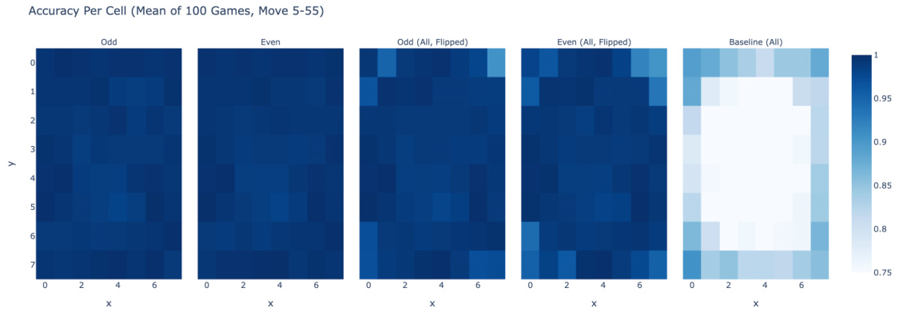
Further, if you flip either probe, it transfers well to the other side's moves, and the odd and even probes are nearly negations of each other. We convert a probe to a direction by taking the difference between the black direction and white direction. (In hindsight, it'd have made been cleaner to train a single probe on all moves, flipped the labels for black to play vs white to play)
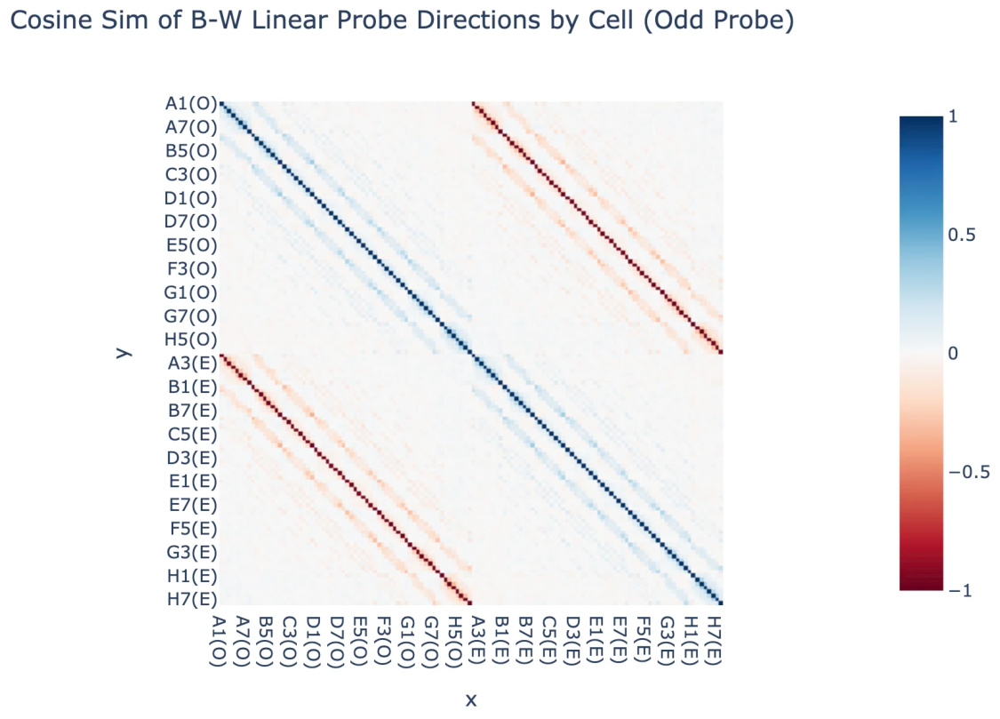
It actually transfers zero-shot to other layers - it's pretty great at layer 4 too (but isn't as good at layer 3 or layer 7):
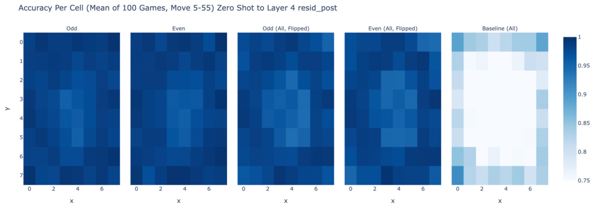
Intervening
My intervention results are mostly a series of case studies, and I think are less compelling and rigorous than the rest, but are strong enough that I buy them! (I couldn't come up with a principled way of evaluating this at scale, and I didn't have much time left). The following aren't cherry picked - they're just the first few things I tried, and all of them kinda worked!
To intervene, I took the model's residual stream after layer 4 (or layer 3), took the coordinate when projecting onto my_probe , and negated that and multiplied by the hyper-parameter scale (which varied from 0 to 16 ).
My first experiment had layer 4 and scale 1 (ie just negating) and worked pretty well:
Subsequent experiments showed that the scale parameter mattered a fair bit - I speculate that if I instead looked at the absolute coefficient of the coordinate it'd work better.
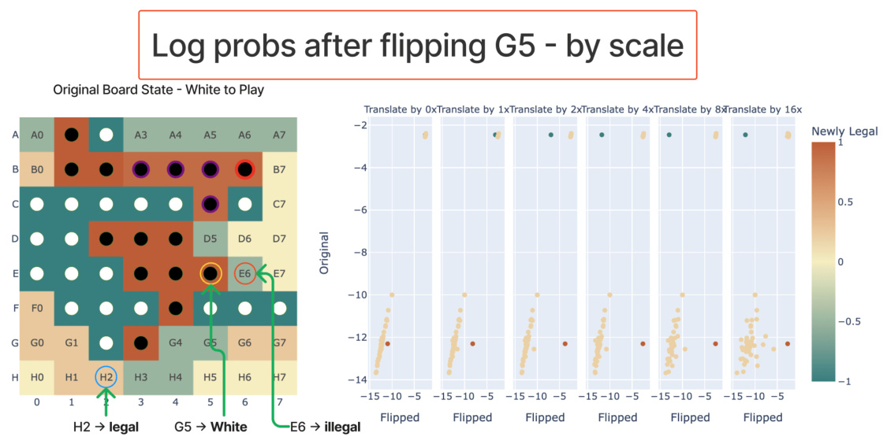
On the first case where it didn't really work, I got good results by intervening at layer 3 instead - evidence that model processing isn't perfectly divided by layer, but somewhat spreads across adjacent layers when it can get away with it.
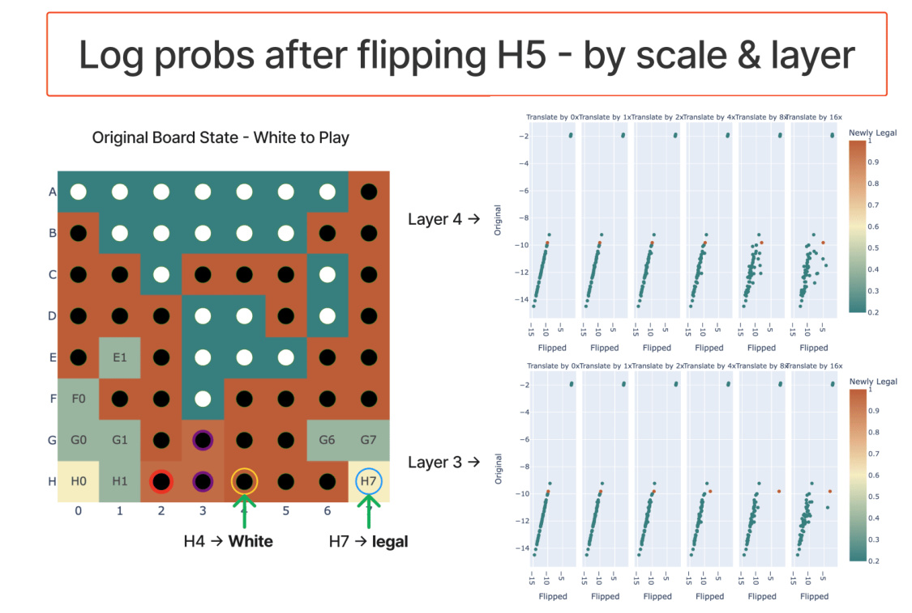
It seems to somewhat work for multiple edits - if I flip F5 and F6 in the above game to make G6 illegal, it kinda realises this, though is a weaker effect and is jankier and more fragile:
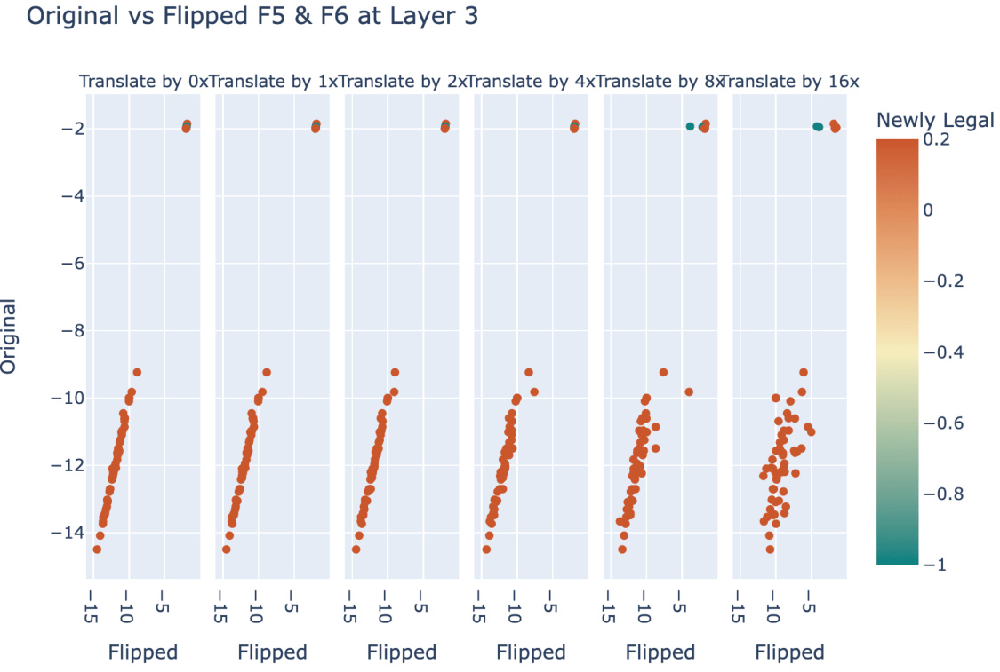
Note that my edits do not perfectly recover performance - the newly legal logits tend to not be quite as large as the originally legal logits. To me this doesn't feel like a big deal, here's some takes on why this is fine:
-
I really haven't tried to improve edit performance, and expect there's low hanging fruit to be had. Eg, I train the probe on layer 6 rather than layer 4, and I train on black and white moves separately rather than on both at once. And I am purely scaling the existing coordinate in this direction, rather than looking at its absolute value.
-
Log probs cluster strongly on an unedited game - correct log probs are near exactly the same (around -2 for these games - uniform probability), incorrect log probs tend to be around -11. So even if I get from -11 to -4, that's a major impact
-
I expect parallel model computation to be split across layers - in theory the model could have mostly computed board state by layer 3, use that partial result in layer 4 and finish computing it in layer 4, and use the full result later. If so, then we can't expect to get a perfect model edit.
-
A final reason is that this model was trained with dropout, which makes everything (especially anything to do with model editing) messy. The model has built in redundancy, and likely doesn't have exactly one dimension per feature. (This makes anything to do with patching or editing a bit suspect and unpredictable, unfortunately)
Please cite this work as:
title={Emergent Linear Representations in World Models of Self-Supervised Sequence Models},
author={Neel Nanda and Andrew Lee and Martin Wattenberg},
year={2023},
eprint={2309.00941},
archivePrefix={arXiv},
primaryClass={cs.LG}
}```
*See [post 2 here](https://www.alignmentforum.org/posts/qgK7smTvJ4DB8rZ6h/othello-gpt-future-work-i-
am-excited-about)*